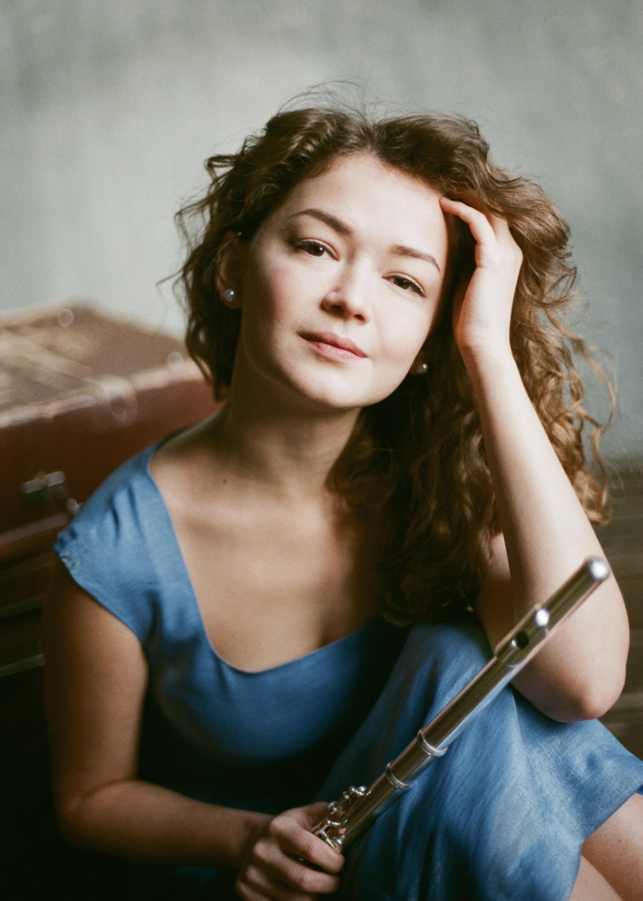
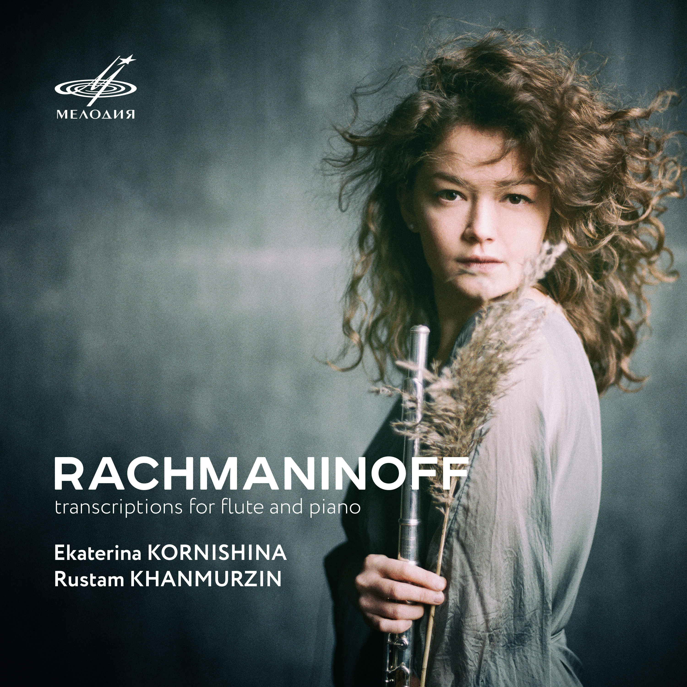
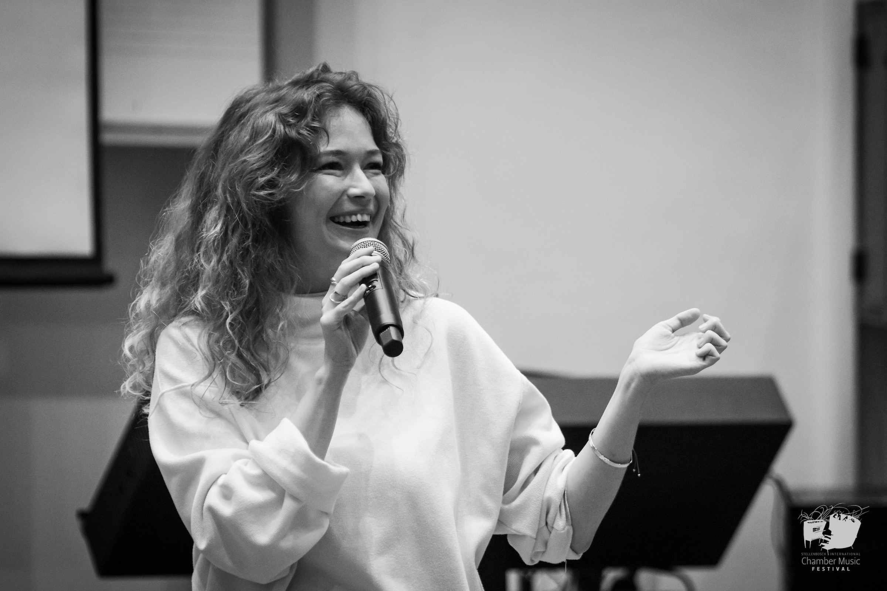

Biografía
Primeros años
Ekaterina Kornishina-Braunfeld comenzó sus estudios musicales a los cuatro años y fue integrante del Coro Infantil del Teatro Bolshói.
Formación
Posteriormente ingresó en la Escuela Central de Música del Conservatorio Chaikovski de Moscú, donde estudió con el profesor Yuri Dolzhikov, y continuó después su formación en el Conservatorio Chaikovski de Moscú en la clase del profesor Alexander Golyshev.
Más tarde estudió también en la Escuela Superior de Música Reina Sofía de Madrid en la clase de Jacques Zoon.
Su desarrollo artístico se enriqueció asimismo gracias a clases magistrales con destacados flautistas como Emmanuel Pahud, Felix Renggli, Philippe Bernold, Sophie Cherrier, Andrea Lieberknecht, Vincent Lucas, Davide Formisano y Shigenori Kudo, así como con clases magistrales de música de cámara junto a Wenzel Fuchs (clarinete), Hansjörg Schellenberger (oboe), Alexander Bonduryansky (piano) y Marta Gulyás (piano).
Inicio de carrera
Desde los once años, Ekaterina actúa como solista en festivales internacionales.
A los quince años debutó en el Musikverein de Viena (Brahms-Saal), interpretando el Concierto para flauta y arpa de Mozart.
Entre 2011 y 2016 fue participante habitual de la Academia Internacional de Verano (ISA) del Conservatorio de Viena, y en 2019 fue invitada a la Järvi Academy.
Actividad orquestal e internacional
A los dieciocho años, por invitación de Vladimir Spivakov, pasó a formar parte de la Orquesta Filarmónica Nacional de Rusia como flauta principal.

También ha actuado como flauta principal invitada con orquestas de distintos países europeos.
Como solista, ha actuado con orquestas como la Orquesta Sinfónica Académica Estatal de Rusia E. F. Svetlanov, la Orquesta Filarmónica Nacional de Rusia, la orquesta Virtuosos de Moscú y la Orquesta Sinfónica de Tartaristán.
Música de cámara y colaboraciones
Como solista, Ekaterina ha colaborado con directores como Vladimir Fedoseev, Vladimir Spivakov, Michel Repper, Antony Hermes y Alexander Sladkovsky, y ha actuado como música de cámara junto a Andrey Baranov (violín), Bram van Sambeek (fagot), Boris Andrianov (violonchelo), Dwight Perry (oboe), Yaoguang Zhai (clarinete), Petr Laul (piano), Ilya Gringolts (violín), Nikita Borisoglebsky (violín), Arkady Shilkloper (trompa), Edgar Moreau (violonchelo), Dmitry Illarionov (guitarra) y Artyom Dervoed (guitarra).
Grabaciones y medios
En 2014, Ekaterina grabó la Segunda suite orquestal de Johann Sebastian Bach con Vladimir Spivakov y la orquesta Virtuosos de Moscú.
En 2020, el sello Melodiya publicó un álbum con sus propias transcripciones de obras de Serguéi Rajmáninov para flauta y piano; tras su presentación en Radio France, el álbum entró en el Top Chart.

Música contemporánea
Ekaterina desarrolla una intensa actividad en el ámbito de la música contemporánea. Le han sido dedicadas obras tanto por compositores consagrados como por jóvenes autores, entre ellos Mathias Duplessy, que escribió Bird in the City para ella y el guitarrista Dmitry Illarionov, y Artyom Romodanov, autor de 6/3 para flauta y quinteto de cuerda.
Pedagogía e investigación
Paralelamente a su carrera interpretativa, Ekaterina obtuvo una cualificación en psicología de la orientación, defendiendo un trabajo final titulado «La influencia de la cultura de masas en la regulación inconsciente del comportamiento humano».

Es la fundadora de BusyMozart, un proyecto educativo internacional que reúne participantes de más de 36 países e integra métodos de la psicología del deporte en la formación musical.
Como pedagoga, Ekaterina prepara a sus estudiantes para el ingreso en los principales conservatorios, prestando especial atención a la independencia artística, la creatividad y la seguridad escénica.
En 2025, durante el 20º aniversario del Stellenbosch Chamber Music Festival (Sudáfrica), en colaboración con la directora del festival, Nina Schumann, regaló un fagot a una joven alumna local.
Actividad actual
Actualmente, Ekaterina centra su atención en sus propios proyectos artísticos, la enseñanza y la música de cámara, y desarrolla varias iniciativas nuevas, entre ellas la creación de un festival de música, un proyecto experimental de grabación y una serie internacional de clases magistrales.
Repertorio
Conciertos / Orquesta
- W. A. Mozart — Concierto para flauta y arpa en do mayor, K.299
- W. A. Mozart — Concierto en re mayor, K.314
- P. Benoit — Concierto «Symphonic Tale», Op. 43a
- C. Reinecke — Concierto en re mayor, Op. 283
- C. Reinecke — Ballade para flauta y orquesta
- S. Mercadante — Concierto en mi menor
- A. Vivaldi — Concierto «Il Gardellino», RV 428
- J. Haydn — Concierto para flauta
- M. Weinberg — Concierto para flauta y orquesta
- F. Borne / G. Bizet — Fantasía sobre Carmen
- J. S. Bach — Suite orquestal n.º 2 en si menor, BWV 1067
- J. S. Bach — Concierto de Brandeburgo n.º 2 en fa mayor, BWV 1047
- J. S. Bach — Concierto de Brandeburgo n.º 4 en sol mayor, BWV 1049
Música de cámara
Flauta y piano
- F. Schubert — Trockne Blumen (Introduction and Variations, D. 802)
- F. Poulenc — Sonata para flauta y piano
- S. Prokofiev — Sonata en re mayor, Op. 94
- C. Reinecke — Sonata «Undine», Op. 167
- P. Hindemith — Sonata para flauta y piano
- L. Liebermann — Sonata para flauta y piano, Op. 23
- C.-M. Widor — Suite para flauta y piano, Op. 34
- A. Jolivet — Chant de Linos
- P. Sancan — Sonatine
- O. Taktakishvili — Sonata
- J. N. Hummel — Sonata para flauta y piano
- P. Juon — Sonata para flauta y piano
Flauta, violonchelo y piano
- L. van Beethoven — Trío en si bemol mayor, Op. 11
- C. M. von Weber — Trío en mi bemol mayor, Op. 63
- P. Gaubert — Trois Aquarelles
- N. Rota — Trío para flauta, violín (o violonchelo) y piano
- N. Kapustin — Trío, Op. 86
- G. Sollima — Trío para flauta, violonchelo y piano
- J. Haydn — Trío para flauta, violonchelo y piano
- J. N. Hummel — Adagio, Variations and Rondo
Cuartetos con flauta
- W. A. Mozart — Cuarteto con flauta en re mayor, K.285
- W. A. Mozart — Cuarteto con flauta en sol mayor, K.285a
- W. A. Mozart — Cuarteto con flauta en do mayor, K.285b
- W. A. Mozart — Cuarteto con flauta en la mayor, K.298
Flauta y guitarra
- A. Piazzolla — Histoire du Tango
- M. Duplessy — Bird in the City
- Ravi Shankar — L’aube enchantée sur le Raga Todi
Programas originales
Stories
Concierto para flauta, violonchelo, piano y voz
La flauta a través del tiempo
Conferencia-concierto dedicada a la evolución del instrumento a través de distintas épocas musicales
Aves y música
Conferencia-concierto dedicada al repertorio inspirado en el mundo de las aves
Tradiciones populares en la música clásica
Conferencia-concierto sobre la influencia de la música popular en el repertorio clásico
Contacto
Para conciertos, colaboraciones artísticas y masterclasses:
Daniel Lefèvre
daniel.lefevre.management@gmail.com
Para clases de flauta (online o presenciales) y coaching escénico para músicos de todos los instrumentos, incluyendo presencia escénica, confianza y superación del miedo escénico y la ansiedad antes de actuar: